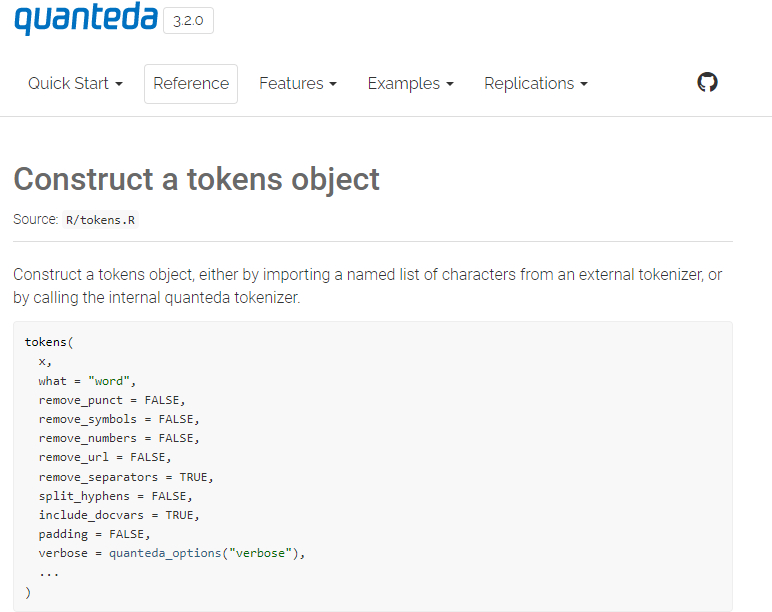

In this post, I will be exploring different text analytics.

Photo by Leah Kelley from Pexels
This is one of the topics I wanted to explore while I was pursuing my master degree.
While I was reading through the different materials on text analytics and natural language processing, I realized the more I read about text analytics, the more I realized it is not as simple as what I initially imagined so.

Taken from giphy
Hence I have spent quite a fair bit of time reading through different books and articles to understand more about text analytics.
Hope this would help you in understanding more about text analytics.
Text Analytics
As the name suggested, this technique focuses on cleaning and drawing insights out from the text data. Often, the text data are not ‘structured’ in a way that could be easily understood by the models/algorithms.
Once the texts are processed, further techniques can be applied to the pre-processed text data to draw insights or even build a machine learning model on the text data.
Let’s look at how text analytics could add value to the insurance business.
Potential Opportunities in Text Analytics
There are articles on how text data can be used in the insurance context. (Rodriguez 2019) discussed the benefits unstructured data (eg. text data) could provide, including how text data could assist insurers in improving decision making and so on.
The author also provided an example of how insurers could tap onto text data is how the various text analytics and natural language processing can be used to process the volume of the texts, assisting claim adjusters potentially to make a more accurate decision with a shorter amount of time spent.
Apart from using text data in claim analysis, (Duncan 2016) also listed some of the financial service use cases where text analytics is being applied.
While the actual usage of text data in insurance day-to-day operation is somewhat lower than expected, the insurers seem to remain optimistic on the potential of using text data (McGrath 2021).
Text pre-processing
(Ferrario and Naegelin 2020) The typical steps of text pre-processing include the following:
Import of raw text and formatting
Conversion of text to lowercase
Tokenization, i.e. split of all strings of text into tokens
Stopwords removal
Part-of-speech (POS) tagging of tokenized text
Stemming or lemmatization
Let’s look at what does each step does in text analytics.
Import of Raw Text and Formating
After importing the text into the environment, it is common that we will perform some levels of “text cleaning” to remove or correct some of the texts before performing the analysis.
Following are some considerations while performing “text cleaning”:
Removing unwanted characters (eg. special characters and symbols)
Within the text, we might have characters we wanted to remove from the analysis. For example, we might want to exclude the reference link from the text analysis.
Most of the modern packages would have included some pre-defined
functions to remove the unwanted characters within the text data. For
example, below is the function to tokenize text data in
quanteda package:

Screen shot from quanteda
documentation page
As shown in the screenshot above, there are options for the users to indicate whether they would like to remove the necessary text within the data.
However, there are scenarios where the pre-defined functions are unable to “clean” the data. For example, we might have the same words but spell differently within the data (eg. color vs colour).
This is where regular expression (a.k.a. regex) comes in very handy. Regex can be used to extract, remove, replace or even find a string within the text.
Personally, I find this regex website is very helpful. It helps me to visualize whether the regex is working (i.e. finding the relevant words) as intended.
Below are some of the common syntax in regex:
Extracted from this website
This is another great resource of the different regex syntax to extract the necessary info from the text.
Misspelling
Often the texts are unlikely to be clean. Misspelling of words is one of the common problems to tackle when analyzing texts.
To fix the misspelling, there are two approaches. One is to use existing packages to fix the typos.
Another method is to create a manual listing of typos. The downside of such an approach is that we are limited to correct words we have observed within the dataset.
Converting into lowercases
As the usual text analytics algorithm is case-sensitive, the same words with different lower cases and/or upper cases will be treated as different words. For example, “TEXT”, “Text” and “text” will be treated as different words.
Hence, the usual approach is to convert all the words into lowercase so that the algorithm would not treat the same words as different words due to the difference in letter cases.
Tokenization
Tokenization is the process of chopping character streams into tokens (Manning, Raghavan, and Schütze 2009). The authors also further explained that a token is an instance of a sequence of characters in some particular document that is grouped as a useful semantic unit for processing.
In general, tokenization consists of following two types and their relevant descriptions (Sarkar 2016):
| Types | Descriptions |
|---|---|
| Sentence Tokenization | Split text into sentences |
| Word Tokenization | Split text into words |
Stopwords
Stopwords are the most common words in any natural language (Singh 2019). Often these stopwords do not carry much value in helping us in understanding the context of the documents/articles.
In general, the stopwords can be categorized into following groups (Hvitfeldt and Silge 2021a):
| Grouping | Descriptions | Recommendation |
|---|---|---|
| Global stopwords | Words that are almost always low in meaning in a given language | Use pre-made stopwords lists to remove them |
| Subject-specific stopwords | Words that are uninformative for a given a subject area | May improve performance if we have domain expertise to create a good list to remove them. But likely require us to create the list manually as these words are generally not considered as stopwords in a given language |
| Document-level stopwords | Words that do not provide any or much information for a given document | Difficult to classify and would not be worth the effort to identify |
While the common approach is to remove stopwords while performing text analytics, removal stopwords would not be appropriate in some of the NLP tasks such as machine translation and so on.
This is because the meaning of the text could change when we remove stopwords. (Schumacher 2019) provided an example to illustrate a scenario where removing stopwords is a bad idea.
Considering the following example by (Schumacher 2019):
Original statement: Stacy gave her doll to the puppy
After removing stopwords: Stacy gave doll puppy
Without the stopwords, we are unable to interpret whether the doll was given to the puppy or the puppy was given to the doll. Hence, this illustrates that the importance of stopwords in this context.
Part of Speech Tagging
Parts of speech (POS) are specific lexical categories to which words are assigned based on their syntactic context and role (Sarkar 2016). In other words, the words in the text are being analyzed and tagged to a role in a sentence (eg. is the word a noun or a verb).
Some of the natural language processing tasks (eg. named entity recognition) would require the tokens to be tagged first.
Stemming & lemmatization
Often within the texts, there might be similar words. For example, the text might contain words like ‘cave’ and ‘caves’, where both of the words are referring to the same thing.
Hence, it would be better for us to “clean” the words before performing any analysis. Otherwise, the algorithm will be treating these words as separate words. (Hvitfeldt and Silge 2021b) The author also mentioned through this process, we reduce the sparsity of the test data, which can be very helpful when training models.
Following is the comparison of stemming and lemmatization (bitext 2021):
| Category | Descriptions |
|---|---|
| Stemming |
|
|
Lemmatization |
Normalize the words based on language structure and how words are used in their context Take the morphological analysis of the words into considerations Generally, longer runtime than stemming |
Feature engineering techniques for text analytics
As the machine learning algorithm is unable to work with the text directly, different feature engineering techniques can be used in preparing the text data before passing it into the algorithm.
Following are some of the feature engineering techniques for text analytics:
Bag of words (BoW)
(Brownlee 2019) explained that BoW is a representation of text that describes the occurrence of words within a document. Essentially we will split the texts into either individual text or a group of texts.
Also, this technique is called ‘bag of words’ as under this technique, the sequence of the words does not matter.
Term frequency & inverse document frequency
(Stecanella 2019) explained that term frequency is calculating the frequency of the words in a document, where the inverse document frequency is measuring how common or a rare a word is in the entire document.
Alternatively, the inverse document frequency can be thought as a “penalty function” imposed on term frequency to measure how frequently the words appear in the document. If the words appear more frequently in the document, the higher the “penalty” is.
Word embedding
This is a more advanced technique, which I won’t be covering in this post. For more info, please refer to this link or this link.
How different R packages work together
In R, many packages work with text analytics and natural language processing.
In this post, I will be exploring the different R packages mentioned in the Text Mining with R book.
Following are how the different text analytics R packages could work together (Silge and Robinson 2021):

Screenshot from Chapter 6 of Text Mining with R book
Demonstration
In this demonstration, I will be using a dataset from Microsoft. This dataset contains a publicly available set of question and sentence pairs.
This is the link to download the dataset.
Setup the environment
First, I will set up the environment by calling all the packages I need for the analysis later.
packages <- c('tidyverse', 'readr', 'skimr', 'tidytext', 'quanteda',
'ggwordcloud', 'lexicon')
for(p in packages){
if(!require (p, character.only = T)){
install.packages(p)
}
library(p, character.only = T)
}
Import data
Next, I will import the dataset into the environment.
Note that the dataset is in tsv format, hence I will be using
read_tsv function to import the dataset into the
environment.
df <- read_tsv("data/WikiQA.tsv",
quote = "\t")
Clean text
Once the data is imported into the environment, tokens
function is used to tokenize the words.
Meanwhile, I have also indicated that punctuation, numbers, symbols, and separators should be removed when the words are being tokenized.
text_df <- tokens(df$Sentence,
remove_punct = TRUE,
remove_numbers = TRUE,
remove_symbols = TRUE,
remove_separators = TRUE,
split_hyphens = FALSE)
Convert to lower letters
As discussed in the post earlier, the common text cleaning also involves converting the token into the lower case as the algorithm is case-sensitive. Same words with the different cases will be treated as different words.
Hence, I have used tokens_tolower function to convert
all the words to lower case.
text_df <- text_df %>%
tokens_tolower()
Remove stopwords & unwanted characters
Next, I will remove the stopwords from the text data. To do so, I
wrap stopwords function with tokens_remove
function.
text_df <- text_df %>%
tokens_remove(stopwords(language = "en", source = "smart"), padding = FALSE)
Note that I have also indicated that padding to be false
so that the function will not replace the stopwords with an empty
string. In other words, the stopwords will be dropped from the
dataset.
Also, note that I have indicated the source for stopwords should be
smart, where the list of stopwords within this source can
be found under this
link.
There are also other sources for the English stopwords. Following are the different sources that are currently supported:
stopwords::stopwords_getsources()
[1] "snowball" "stopwords-iso" "misc" "smart"
[5] "marimo" "ancient" "nltk" "perseus" Next, I will perform a quick check on the cleaned text data. I have noted a few issues within the text data.
For example, there are some digits with alphabets as shown below.
text_df[[51]][2]
[1] "21a"If we were to go back to the original text data, we will realize this string seems to be the robot version number, which may not add much value/insight to the analysis later.
df$Sentence[51]
[1] "The Beretta 21A Bobcat is a small pocket-sized semi-automatic pistol designed by Beretta in Italy."Hence, I will remove this string from the text data. To do so, I have
used tokens_replace and the relevant regex to remove the
words.
Note that in the regex, I have indicated that I want to find all the matching strings that start with a digit and continue by letters. The asterisk means there are 0 or more letters after the digits.
Below is another issue found in the text data. Somehow there is a hyphen before some of the words.
df$Sentence[2735]
[1] "The bar was a staple of the Chicago -based company for some seven decades."Therefore, during the tokenization, I have indicated that the words should be split by hyphens. According to the documentation, hyphens will be treated as a separate token.
To remove the hyphens after splitting the words, I will use regex to remove the hyphens.
These are common issues one might face when cleaning the text data. Therefore, it is always a good practice to double the output to check whether the output is as expected based on the pre-processing steps indicated earlier.
Replace words
Some words may have different spelling. Without any cleaning, the algorithm will these words with a different spelling as different words.
For example, within the text data, I noted that “united state” can also be spelled as “united st” or “u.s” although both of the words refer to “united state”.
Therefore, I will list the words to be replaced within
tokens_replace function.
Note that as I am finding the exact match of the words, hence the
valuetype should be indicated as “fixed”.
Stemming
As mentioned in the earlier section, often we may perform some further cleaning to find the root words, otherwise the algorithm will treat these words as separate words by themselves.
For example, if I were to extract the text that contains “tree”, we will note that “trees” are just the plural form of “tree” and we may not want to differentiate “tree” and “trees” in the analysis.
temp <- text_df %>%
dfm() %>%
tidy() %>%
filter(term != "") %>%
filter(str_detect(term, "\\b(tree)") == TRUE)
unique(temp$term)
[1] "tree" "trees" "treedome" "treener" "treehouse"Therefore, one of the common approaches is to use stemming to find the root words.
To do so, I will use tokens_wordstem function to perform
stemming on the words.
text_df_stem <- text_df %>%
tokens_wordstem(language = "english")
Next, I will dfm function to create a document-feature
matrix so that later I could use tidy function to convert
the object to conform to tidy data format.
Also, I will trim away all the term frequency that is lesser than 8.
text_df_stem_1 <- text_df_stem %>%
dfm() %>%
dfm_trim(min_termfreq = 8)
text_df_stem_1_tidy <- tidy(text_df_stem_1) %>%
filter(term != "")
Once the object is converted into tidy data format, we could use our usual dplyr to transform for the necessary analysis.
I will perform a frequency count on each word in the entire dataset, regardless of which documents they appear on.
text_df_stem_1_tidy_count <- text_df_stem_1_tidy %>%
group_by(term) %>%
summarise(tot_count = sum(count))
I will further sort the count descending. From the results, we can see that some of the words appear more frequently than the rest.
text_df_stem_1_tidy_count %>%
arrange(desc(tot_count))
# A tibble: 5,398 x 2
term tot_count
<chr> <dbl>
1 state 2810
2 unit 2076
3 includ 1416
4 american 1305
5 world 1267
6 year 1154
7 nation 1047
8 war 1037
9 time 928
10 film 862
# ... with 5,388 more rowsHowever, it would be quite difficult to compare the frequency count of different words by looking at the data above.
Hence, I will pass the output into ggwordcloud to
visualize the output in wordcloud. As there are too many unique words
within the data and the graph will be cluttered with different words if
we were to visualize all the words in wordcloud, the graph will be
cluttered with words.
Hence, to overcome this, I will filer out those words with less than 350 count to lower the number of word counts.
text_df_stem_1_tidy_count %>%
filter(tot_count >= 350) %>%
ggplot(aes(label = term, size = tot_count, color = tot_count)) +
geom_text_wordcloud_area(shape = "circle") +
scale_size_area(max_size = 18) +
theme_minimal()
While this stemming could assist us in finding the root words, but it also fails to identify the root words for some of the words.
text_df_stem_1_tidy_count %>%
filter(str_detect(term, "(young)") == TRUE)
# A tibble: 3 x 2
term tot_count
<chr> <dbl>
1 young 123
2 younger 24
3 youngest 24Lemmatization
Recall in the earlier section, I have discussed that lemmatization is another method to find the root words.
This method is linguistics-based and could potentially overcome the issue we face when using stemming.
To perform lemmatization, I have referred to this Stack
Overflow post on how to perform lemmatization by using
tokens_replace function.
text_df_lemma <- text_df %>%
tokens_replace(pattern = lexicon::hash_lemmas$token,
replacement = lexicon::hash_lemmas$lemma)
Once the lemmatization is done, let’s us check whether lemmatization has successfully finding the root words of “younger” and “youngest”.
text_df_lemma %>%
dfm() %>%
tidy() %>%
filter(term != "") %>%
filter(str_detect(term, "(young)") == TRUE) %>%
group_by(term) %>%
tally()
# A tibble: 3 x 2
term n
<chr> <int>
1 young 163
2 young's 4
3 youngblood 1At least now the original words for “younger” & “youngest” are found through lemmatization. The rest of the words which contain “young” are unlikely to have “young” as the root word.
Next, I will follow similar steps to create the document-feature matrix and convert the data into tidy data format.
Once the frequency count is computed, I will pass the data into word cloud function to visualize the words in the word cloud format.
text_df_lemma_1_tidy_count %>%
filter(tot_count >= 350) %>%
ggplot(aes(label = term, size = tot_count, color = tot_count)) +
geom_text_wordcloud_area(shape = "square") +
scale_size_area(max_size = 18) +
theme_minimal()
Conclusion
That’s all for the day!
Thanks for reading the post until the end.
Feel free to contact me through email or LinkedIn if you have any suggestions on future topics to share.
Refer to this link for the blog disclaimer.
Till next time, happy learning!

Photo by Emre Can Acer from Pexels